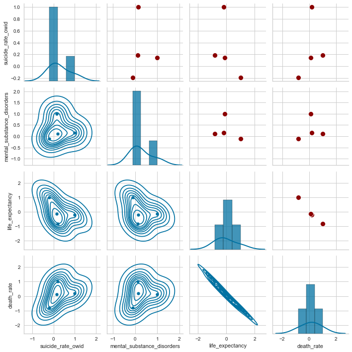
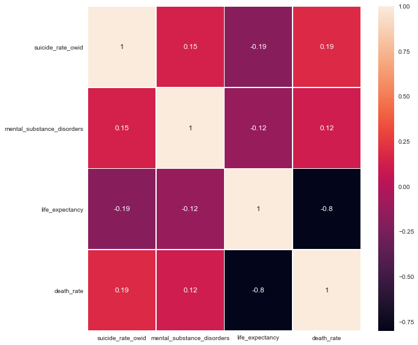
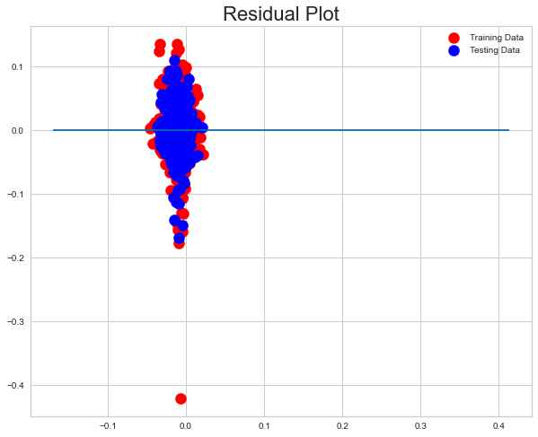
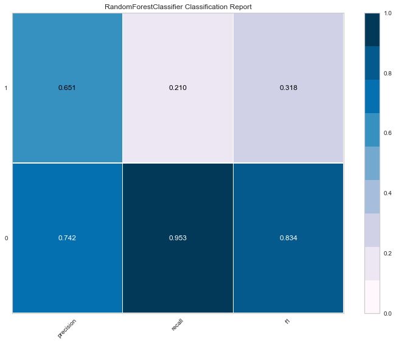

Correlation
An initial correlation was made in which we discovered the following correlations:
- Positive Correlation
- Suicide rate: 1.000000
- Mental and substance disorders: 0.146587
- Death rate: 0.187283
- Negative Correlation
- Life expectancy: -0.188927


Linear Model
We found low testing and training scores, as well as accuracy. This is because linear regressions are used for predictions (of two variables but not categorical variables), in which a logistical regression has a better fit.
- Results
- Training Score: 0.06487984027546811
- Testing Score: 0.04915427513155979
- Accuracy: 0.049


Logistical Regression
A logistical regression was made that gave us an accuracy for the model of 70%.
Plots were created showing the relationship of unemployment vs suicide rate, and mental disorders and substance abuse vs suicide rate.
- Results
- Accuracy：70.43%
- Recall：0.00%
- Precision：0.00%
- F1：0.00%


Random forest
The model also got an accuracy of 73% but with higher precision and recall than the logistical model.
- Results
- Training Data Score: 1.0
- Testing Data Score: 0.7364787111622555
